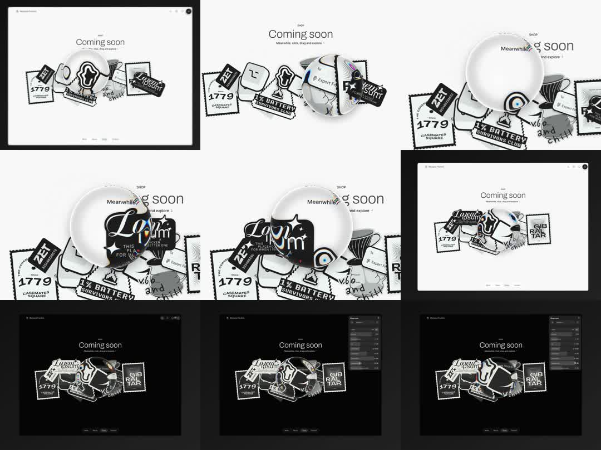

Media
Frame-by-frame

0-20%
Sphere parked over the sticker pile; artwork inside it bulges enlarged with rainbow dispersion at the glass rim.
20-50%
Sphere drags left/right across the pile: stamps warp and swell through the lens, sizes distorting with barrel refraction.
50-75%
Sphere rests on the 'Lo-Fi' sticker - script lettering hugely magnified, rim fringe visible; surrounding pile static.
75-100%
Dark-mode variant of the same comp; sphere picks up environment tint; settings panel (controls) visible at right in dark frames.